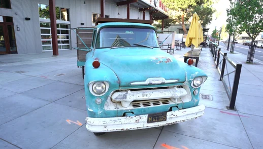
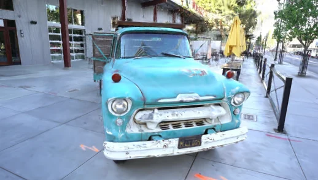
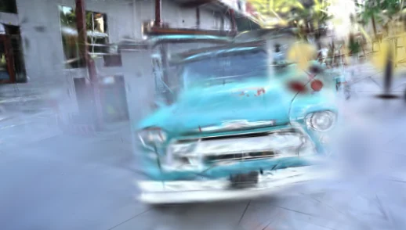
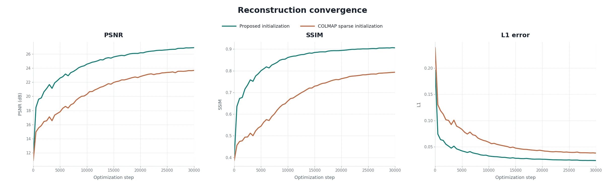
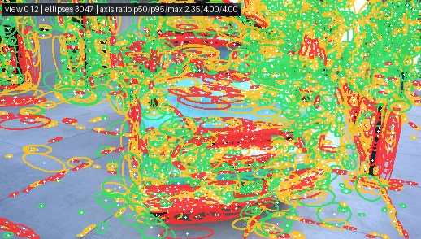
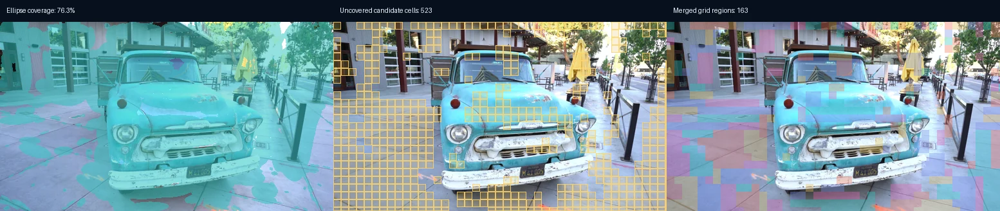

1,000 步steps
| 指标Metric | 本文方法Proposed | COLMAP sparse |
|---|---|---|
| PSNR | 19.59 dB | 15.53 dB |
| SSIM | 0.6724 | 0.4742 |
| L1 | 0.0638 | 0.1190 |
本文提出一种基于稠密三维几何的区域级多视图 Gaussian 初始化方法。该方法根据图像结构构造二维候选区域， 利用像素对齐的稠密三维几何提取相应的连续局部表面，通过 PCA 在三维空间中估计各向异性 Gaussian 参数， 并融合不同视图中的重复表示。实验结果表明，所提出的初始化能够有效表征场景的主要结构， 并提升后续优化的收敛速度与最终渲染质量。
We present a region-level multi-view Gaussian initialization method based on dense 3D geometry. The method constructs 2D candidate regions from image structure, extracts the corresponding continuous local surfaces using pixel-aligned dense 3D geometry, estimates anisotropic Gaussian parameters in 3D through PCA, and fuses duplicate representations across views. Experimental results show that the proposed initialization effectively represents the principal scene structure while improving the convergence of subsequent optimization and final rendering quality.
基于本方法，由 48 个输入视图构建的区域级初始化结果。初始构造即获得了较高质量的 Gaussian，并捕捉到场景的主要结构信息。
Region-level initialization constructed from 48 input views using the proposed method. The initialization already yields high-quality Gaussians that capture the principal structure of the scene.
采用相同的优化配置并训练 30,000 步。动画完整记录前 100 步，之后每 100 步记录一次。注：本研究使用 gsplat 进行 Gaussian 优化与渲染。
Both pipelines use the same optimization settings and train for 30,000 steps. The animation records every step through step 100 and then every 100 steps.Note: Gaussian optimization and rendering are implemented with gsplat.




| 指标Metric | 本文方法Proposed | COLMAP sparse |
|---|---|---|
| PSNR | 19.59 dB | 15.53 dB |
| SSIM | 0.6724 | 0.4742 |
| L1 | 0.0638 | 0.1190 |
| 指标Metric | 本文方法Proposed | COLMAP sparse |
|---|---|---|
| PSNR | 21.67 dB | 17.10 dB |
| SSIM | 0.7581 | 0.5123 |
| L1 | 0.0476 | 0.0924 |
给定多视图图像，首先使用稠密几何估计器获得像素对齐的三维点图与相机参数；随后，本文方法基于这些稠密三维几何构造区域级 Gaussian 初始化。
Given multi-view images, a dense geometry estimator first produces pixel-aligned 3D point maps and camera parameters. The proposed method then constructs a region-level Gaussian initialization from this dense 3D geometry.
注：本文实验采用 VGGT。 Note: VGGT is used in our experiments.Lab 多尺度 LoG 捕捉亮度与颜色结构，规则网格补充低纹理区域。
Multiscale Lab-LoG captures luminance and color structure; a grid fills low-texture areas.
把区域内像素映射到三维，并用固定场景尺度排除深度跳变。
Lift pixels to 3D and reject depth discontinuities using a fixed scene-scale threshold.
PCA 直接给出局部表面的中心、主方向和三轴尺度。
PCA directly estimates each local surface center, orientation, and three-axis scale.
联合比较位置、协方差、法向、尺度与颜色，只合并重复表面表示。
Position, covariance, normal, scale, and color jointly identify duplicate surface representations.


关于候选区域构建、三维连续性筛选、PCA 参数化与多视图融合的完整说明，请参阅技术报告 。
For complete details on candidate-region construction, 3D continuity filtering, PCA parameterization, and multi-view fusion, see the technical report .